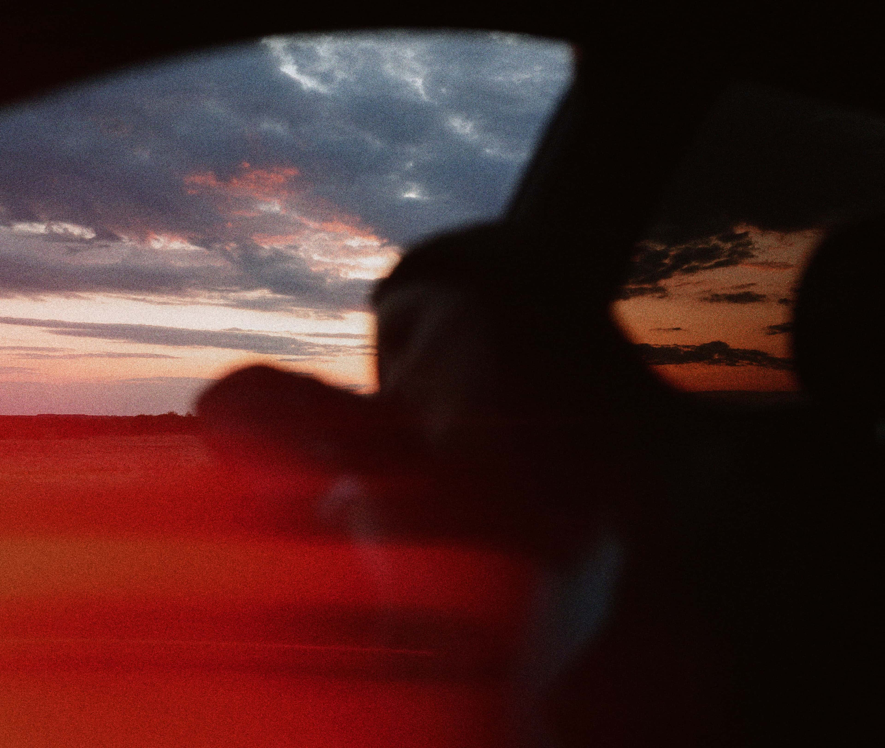
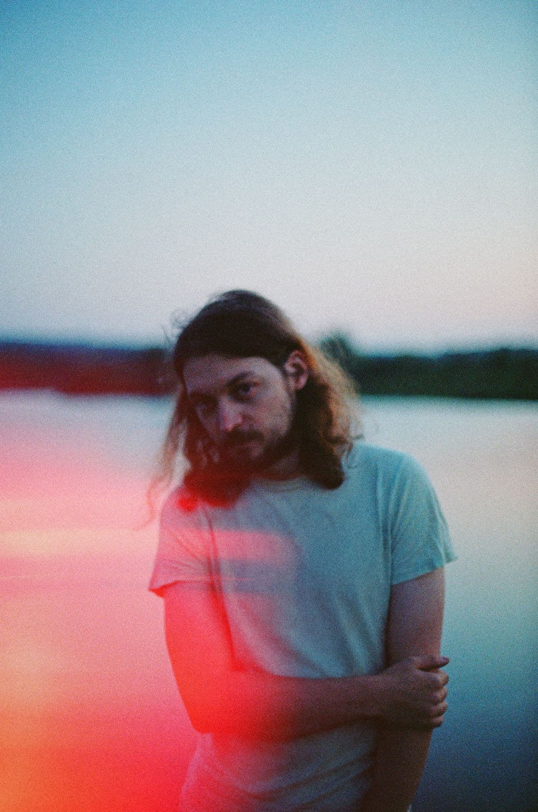
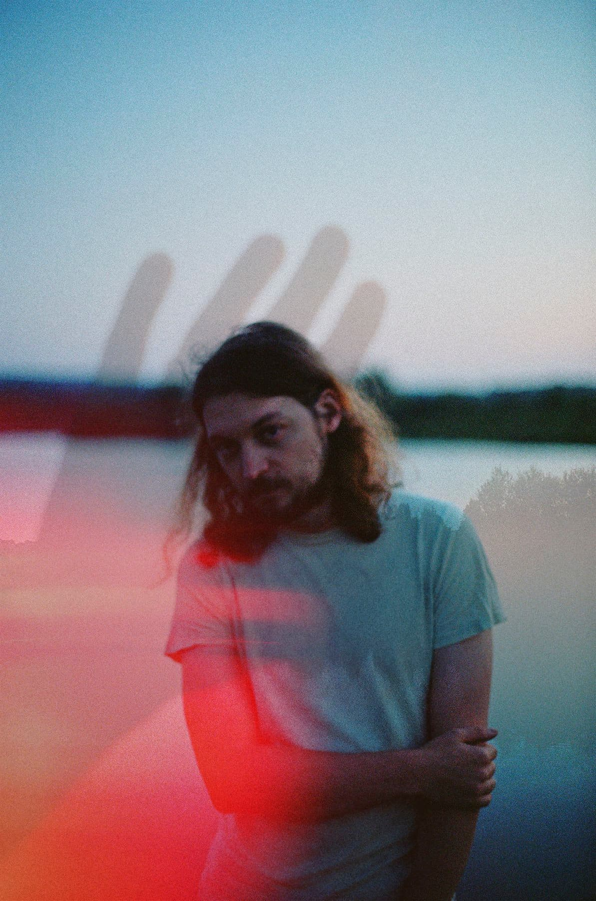

Julien Pannetier, better known as VIQ, brings a fresh perspective to the electronic and indie music scene. Born and raised in Montmorency, France, he grew up surrounded by music, splitting his time between skateboarding and drawing inspiration from electronic pioneers such as Lorn, Justice, Daft Punk, and Mk.gee.
Influenced by his daily life and emotions, VIQ crafts a sound that blends electronic music, chillwave, synthwave, and dreampop. He began releasing music in 2019, quickly developing a signature style that caught the attention of California-based independent label Stratford.Ct, which he joined in 2020, releasing albums on vinyl and cassette.
His work has been featured on several influential platforms including Lofi Girl, EDM.com, Electronic Gems, KALTBLUT Magazine, Stereofox, Nightride FM, etc. Alongside his music releases, he has also collaborated with the video game industry, contributing both musically and creatively to the sector.